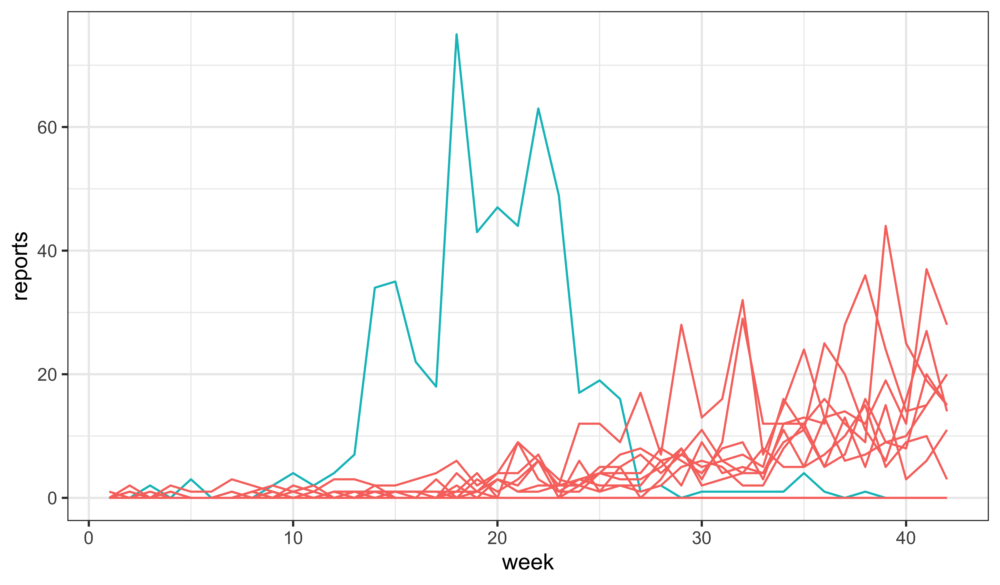
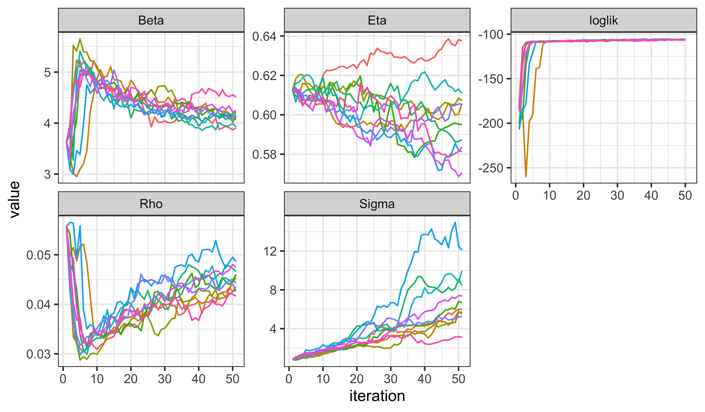
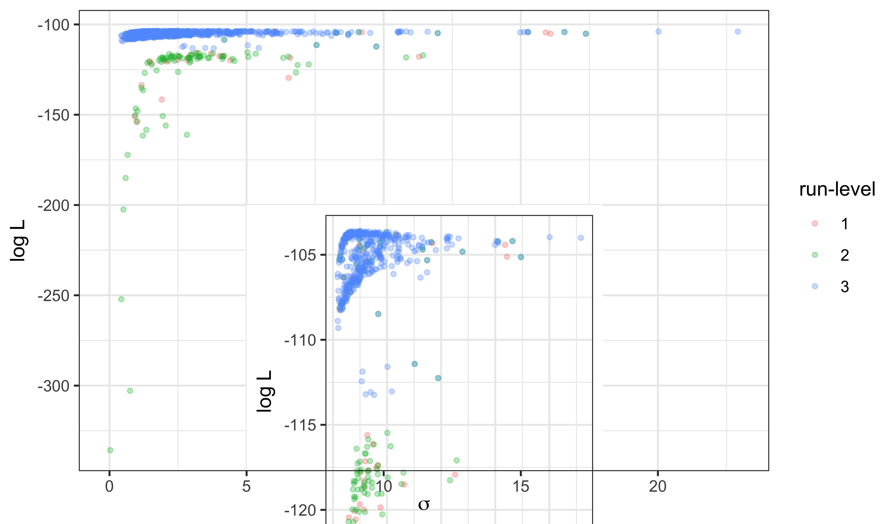
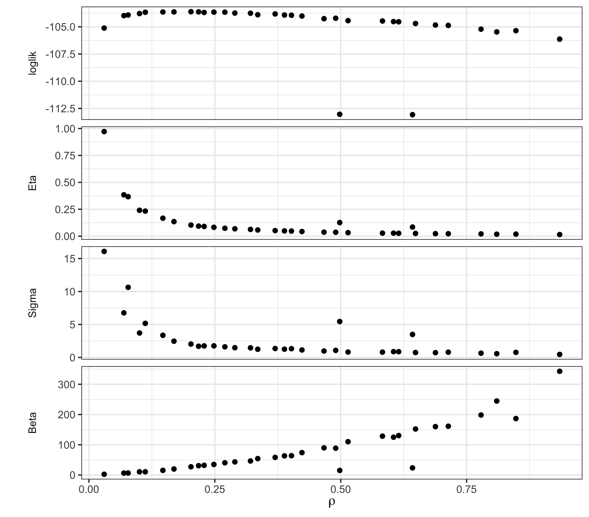

library(tidyverse)
library(pomp)
library(iterators)
library(doFuture)
if (.Platform$OS.type=="windows")
options(pomp_cdir="./tmp")Exercise: Fitting the SEIR model
Problem Statement
In this exercise, you will estimate the parameters and likelihood of the SEIR model you implemented in the earlier lessons by following the template above. Purely for the sake of simplicity, you may assume that the values of \(\mu_{IR}\) and \(k\) are known. To do this efficiently, we will make use of a system of run-levels. At each run-level, we will select some number of particles (Np), number of IF2 iterations (Nmif), and number of starting guesses, to achieve a particular result.
First, conduct a local search and compute the likelihood at the end of each
mif2run, as shown above. Use only as many parallelmif2computations as you have processors on your computer (or perhaps somewhat fewer). Track the time used and compute the amount of time used per cpu per IF2 iteration per 1000 particles. (Recall that one particle filter computation is roughly equal to a IF2 iteration in computational complexity if they both use the same number of particles.)At run-level 1, we want a quick calculation that verifies that the codes are working as expected. Using the expense estimates you generated in Step (a), choose a number of IF2 iterations so that you can do a very crude “global search” that will complete in two or three minutes. Do not reduce
Npdrastically, as we don’t want to degrade the performance of the individual IF2 computations. Run your global search with these settings. This serves to debug your global search code.At run-level 2, we want a computation that gives us some results we can begin to interpret, but that is still as quick as possible. Choose
Nmifand the number of random starts so that you can obtain the beginnings of a global search of the parameter space in one hour or less. Run your global search with these settings and plot the results.Run-level 3 is intended for final or near-final results. You may want to tune your settings (
Nmif,Np,rw.sd,cooling.fraction.50) at this point, based on what you found at run-level 2. Decide how much time in the next 18 hours is available to you for a computation. Choose the number of starting guesses so that you can obtain as thorough a global search as possible within this period. Run your global search and identify a maximum likelihood estimate.How does the SEIR model compare with the SIR model? Discuss the overall quality of the fit as well as important differences in how the two models are explaining the data.
Setup and check
We start by building a pomp object holding the Consett measles data and the SEIR process model from Exercise 2.4.
source("model_measSIR.R")seir_stoch <- Csnippet("
double dN_SE = rbinom(S,1-exp(-Beta*I/N*dt));
double dN_EI = rbinom(E,1-exp(-Sigma*dt));
double dN_IR = rbinom(I,1-exp(-Gamma*dt));
S -= dN_SE;
E += dN_SE - dN_EI;
I += dN_EI - dN_IR;
R += dN_IR;
H += dN_IR;
")
seir_rinit <- Csnippet("
S = nearbyint(Eta*N);
E = 0;
I = 1;
R = nearbyint((1-Eta)*N);
H = 0;
")
measSIR |>
pomp(
rprocess=euler(seir_stoch,delta.t=1/7),
rinit=seir_rinit,
partrans=parameter_trans(
log=c("Beta","Sigma"),
logit=c("Eta","Rho")
),
paramnames=c("N","Beta","Sigma","Gamma","Eta","k","Rho"),
statenames=c("S","E","I","R","H")
) -> measSEIRNow, we’ll use the best parameters we’ve found so far. We simply extract these from the database and insert them into our new ‘pomp’ object, measSEIR.
read_csv("measles_params.csv") |>
filter(abs(Gamma-2)<0.001) |>
filter(loglik==max(loglik)) |>
select(-loglik,-loglik.se) -> coef(measSEIR)Rows: 1299 Columns: 8
── Column specification ────────────────────────────────────
Delimiter: ","
dbl (8): Beta, Gamma, Rho, k, Eta, N, loglik, loglik.se
ℹ Use `spec()` to retrieve the full column specification for this data.
ℹ Specify the column types or set `show_col_types = FALSE` to quiet this message.The SEIR model has one parameter that the SIR had not, namely \(\mu_{EI}\), the rate at which infections progress from the latent to the infectious stage. We take a guess for this parameter and insert it into the ‘pomp’ object using coef<-:
coef(measSEIR,"Sigma") <- 0.8Warning: in 'coef<-': name 'Sigma' refers to no existing
parameter; it is being concatenated.fixed_params <- coef(measSEIR,c("N","Gamma","k"))
coef(measSEIR) Beta Gamma Rho k
3.629251e+00 2.000000e+00 5.569420e-02 1.000000e+01
Eta N Sigma
6.125641e-01 3.800000e+04 8.000000e-01 The warning tells us that Sigma is a new parameter, which, of course, we knew.
Because this is just an exercise, we are only estimating four parameters. For a thorough scientific analysis, we would probably also want to consider the evidence in the data concerning the parameters that are fixed here.
Sanity check
To debug the model and provide a sanity check on our parameter guesses, we first explore via simulation. Some simulations die out, but others lead to epidemics.
set.seed(1014406)
measSEIR |>
simulate(nsim=20,format="data.frame",include=TRUE) |>
ggplot(aes(x=week,y=reports,group=.id,color=(.id=="data")))+
geom_line()+
guides(color="none")+
theme_bw()
The next prerequisite is that we can successfully filter:
measSEIR |>
pfilter(Np=1000) -> pf1
logLik(pf1)[1] -251.9792plot(pf1)The minimum effective sample size is 12, which is not a complete disaster, and we should bear in mind that this is likely to improve when we fit the parameters.
Setup of parallel computing environment
plan(multisession)Local search
We now carry out the local search. Here, we’re cooling quite slowly: the perturbation magnitude at the fiftieth iteration is half of what it was at the first.
ncpu <- nbrOfWorkers()
bake(file="Q_fit_seir_local_mifs.rds",{
foreach(i=seq_len(ncpu),.combine=c,
.options.future=list(seed=482947940)
) %dofuture% {
measSEIR |>
mif2(
Np=1000, Nmif=50,
cooling.fraction.50=0.5,
rw.sd=rw_sd(Beta=0.02, Rho=0.02, Eta=ivp(0.02), Sigma=0.02)
)
}
}) -> local_mifsWe examine the trace plots
local_mifs |>
traces(pars=c("loglik","Beta","Sigma","Rho","Eta")) |>
melt() |>
ggplot(aes(x=iteration,y=value,group=.L1,color=factor(.L1)))+
geom_line()+
guides(color="none")+
facet_wrap(~name,scales="free_y")
As usual, we should evaluate the likelihoods using a particle filter, rather than relying on the likelihood from the last filtering iteration of the perturbed model used by mif2.
bake(file="Q_fit_seir_local_logliks.rds",{
foreach(mf=local_mifs,.combine=rbind,
.options.future=list(seed=901242057)
) %dofuture% {
evals <- replicate(10, logLik(pfilter(mf,Np=2000)))
ll <- logmeanexp(evals,se=TRUE)
mf |> coef() |> bind_rows() |>
bind_cols(loglik=ll[1],loglik.se=ll[2],Np=2000,nfilt=10)
}
}) -> local_loglikslocal_logliks$loglik est est est est est est
-105.0946 -104.8637 -104.9382 -105.1521 -104.5660 -104.5627
est est est est
-104.7274 -104.8749 -104.4435 -105.3890 local_logliks$loglik.se se se se se se
0.04509426 0.05585337 0.04897253 0.06432649 0.05333849
se se se se se
0.03304969 0.04582491 0.03639205 0.03924775 0.04348803 After 50 IF2 iterations, the log likelihoods appear to have already reached the vicinity of what we found for the SIR model, with small s.e. (if logmeanexp is to be trusted). Moreover, the trace-plots suggest that further improvement is possible.
Now, we quantify the amount of time required for the above. Note that we used bake to archive the results of the above two computations. [More about bake here.]. The archives store not only the results, but also information about the time elapsed. Accordingly, the first line in the following adds up the total time needed for these two computations. The second and third lines add up the total amount of work, which we have seen is jointly proportional to number of mif2 or pfilter iterations and to the number of particles used. Recall that the complexity of one mif2 iteration is roughly equal to that of one pfilter operation with the same number of particles. In line four, efactor is computed as the average number of CPU-sec needed for a 1000-particle pfilter operation.
etime <- attr(local_mifs,"system.time")+attr(local_logliks,"system.time")
mif_work <- sum(sapply(local_mifs,slot,"Nmif")*apply(sapply(local_mifs,slot,"Np"),2,mean))
pfilter_work <- with(local_logliks,sum(Np*nfilt))
efactor <- unname(etime[3]*ncpu/(mif_work+pfilter_work)*1000)
efactor[1] 0.1631714Run-level 1
We proceed to design a global search. At run-level 1, we just want something that will run very quickly but that we can scale up easily. Let aim for something that will complete in 1 minute. Using 1000 particles for mif2 and 2000 for the pfilter likelihood evaluation seems to be working well, so let’s leave those alone. After 50 iterations, it seemed that IF2 was still increasing the likelihood, so perhaps we might increase the number of IF2 iterations somewhat, let’s say to 100. We’ll leave the cooling fraction alone, so that perturbations at the last iteration will be 25% of what they were at the first. How many starts can we have and finish in 1 min?
unit_cost <- (100*1000+10*2000)/1000*efactor
budget <- 60*ncpu
budget/unit_cost system
30.64262 freeze(
runif_design(
lower=c(Beta=5,Rho=0.2,Eta=0,Sigma=1/3),
upper=c(Beta=80,Rho=0.9,Eta=1,Sigma=3),
nseq=45
),
seed=2062379496
)-> guessesbake(file="Q_fit_seir_global1.rds",{
foreach(guess=iter(guesses,"row"), .combine=rbind,
.options.future=list(seed=1270401374)
) %dofuture% {
measSEIR |>
mif2(
Nmif=100, Np=1000,
cooling.fraction.50=0.5,
rw.sd=rw_sd(Beta=0.02, Rho=0.02, Eta=ivp(0.02), Sigma=0.02),
params=c(unlist(guess),fixed_params)
) -> mf
replicate(
10,
mf |> pfilter(Np=2000) |> logLik()
) |>
logmeanexp(se=TRUE) -> ll
mf |> coef() |> bind_rows() |>
bind_cols(loglik=ll[1],loglik.se=ll[2])
} -> global1
attr(global1,"ncpu") <- nbrOfWorkers()
global1
}) -> global1Sure enough, the above took 48.1010 sec to run on 10 CPU. Let us examine the results.
pairs(
~loglik+Beta+Eta+Rho+Sigma,
data=global1,
pch=16
)Even with just this small amount of effort, we’re beginning to see some structure emerge. This is encouraging, so we’ll continue on to the next stage of the Exercise.
Run-level 2
Now let’s scale this up to something that we can begin to take seriously. While we’re at it, we’ll throw some more computational power at the problem, and subject all our estimates to a second round of IF2, for a total of 200 IF2 iterations altogether. If we budget 5 min, how many starts can we afford?
unit_cost <- (200*1000+10*2000)/1000*efactor
budget <- 5*60*ncpu
budget/unit_cost system
83.57078 For this second set of 100 iterations, we’ll speed up the cooling. We accomplish this using continue, as shown below and explained in the manual. The following should look very much like the corresponding run-level 1 chunk, which is the point: it is easy to scale the computations up.
freeze(
runif_design(
lower=c(Beta=5,Rho=0.2,Eta=0,Sigma=1/3),
upper=c(Beta=80,Rho=0.9,Eta=1,Sigma=3),
nseq=150
),
seed=2062379496
)-> guessesbake(file="Q_fit_seir_global2.rds",{
foreach(guess=iter(guesses,"row"), .combine=rbind,
.options.future=list(seed=1270401374)
) %dofuture% {
measSEIR |>
mif2(
Nmif=100, Np=1000,
cooling.fraction.50=0.5,
rw.sd=rw_sd(Beta=0.02, Rho=0.02, Eta=ivp(0.02), Sigma=0.02),
params=c(unlist(guess),fixed_params)
) |>
continue(
cooling.fraction=0.1
) -> mf
replicate(
10,
mf |> pfilter(Np=2000) |> logLik()
) |>
logmeanexp(se=TRUE) -> ll
mf |> coef() |> bind_rows() |>
bind_cols(loglik=ll[1],loglik.se=ll[2])
} -> global2
attr(global2,"ncpu") <- nbrOfWorkers()
global2
}) -> global2The above computation took 2.5 min using 10 cores.
Again, we have a look at the results. The suspicion that the structure of the likelihood surface is beginning to emerge is strengthened.
pairs(
~loglik+Beta+Eta+Rho+Sigma,
data=global2,
pch=16
)Run-level 3
At run-level 3, we want near-final results. We’ll increase the thoroughness of the global search by increasing the number of starts. If we budget 30 min, how many starts can we afford?
unit_cost <- (200*1000+10*2000)/1000*efactor
budget <- 30*60*ncpu
budget/unit_cost system
501.4247 We proceed exactly as before, but with more starts.
freeze(
runif_design(
lower=c(Beta=5,Rho=0.2,Eta=0,Sigma=1/3),
upper=c(Beta=80,Rho=0.9,Eta=1,Sigma=3),
nseq=1000
),
seed=2062379496
)-> guesses## Uncomment this code chunk to perform the run-level 3 calculation!
foreach(guess=iter(guesses,"row"), .combine=rbind,
.options.future=list(seed=1270401374)
) %dofuture% {
measSEIR |>
mif2(
Nmif=100, Np=1000,
cooling.fraction.50=0.5,
rw.sd=rw_sd(Beta=0.02, Rho=0.02, Eta=ivp(0.02), Sigma=0.02),
params=c(unlist(guess),fixed_params)
) |>
continue(
cooling.fraction=0.1
) -> mf
replicate(
10,
mf |> pfilter(Np=2000) |> logLik()
) |>
logmeanexp(se=TRUE) -> ll
mf |> coef() |> bind_rows() |>
bind_cols(loglik=ll[1],loglik.se=ll[2])
} -> global3We can see that a few of these computations result in non-finite log likelihoods and that others lead to variability in the log likelihood estimates that is uncomfortably large (e.g., loglik.se > 0.2). However, almost all of the estimates that are within 10 units of the maximum are estimated fairly precisely.
global3 |>
count(
finite=is.finite(loglik),
precise=loglik.se>0.2,
high=loglik>max(loglik,na.rm=TRUE)-10
) |>
as.data.frame() finite precise high n
FALSE NA NA 6
TRUE FALSE FALSE 112
TRUE FALSE TRUE 462
TRUE TRUE FALSE 417
TRUE TRUE TRUE 1
TRUE NA FALSE 2global3 |>
filter(
is.finite(loglik),
loglik>max(loglik,na.rm=TRUE)-10
) -> global3
pairs(
~loglik+Beta+Eta+Rho+Sigma,
data=global3,
pch=16,cex=0.5
)We can visualize the progress from run-levels 1 through 3 by plotting the estimates for each stage. The inset shows the upper 20 log likelihood units.

Discussion
The maximum log likelihood discovered is -103.6, -103.6, an improvement of 0.7, 0.7 unit over the SIR model with the same values of \(\mu_{IR}\) and \(k\). This small improvement is not by itself compelling evidence for the value of an extra parameter. However, the interpretation of the fitted model has some interesting features, which can be seen from the scatter plot matrix above.
We note that the trade-offs among \(\beta\), \(\eta\), and \(\Rho\) remain much the same as for the SIR model, suggesting that the model faces the same need to balance these parameters to explain the size and shape of the observed outbreak. However, it does appear that the data are more informative about the initial susceptible fraction \(\eta\) as it appears in the SEIR model than they were about it in the SIR model. Moreover, the ML estimate of the reporting rate \(\Rho\) (0.16, 0.16) for the SEIR is noticeably larger than it was in the SIR (0.056). Interestingly, the intermediate values of the ML estimates of \(\Rho\) and \(\eta\) are a closer match to epidemiological expectations for endemic measles in the pre-vaccine era, while remaining consistent with a mean infectious period of 0.5~wk, in contrast with the results in Section 5 of Lesson 4. Thus, it appears that adding a latent period to the model can substantively alter the interpretation of the fitted model without significantly changing the overall fit measured by maximized likelihood.
Profile likelihood calculations would help to clarify this finding. To get an initial indication of what such a profile might show, we can examine a “poor man’s profile” using the computations we’ve already performed. For example, the following shows the poor man’s profile over \(\Rho\). Consult the R script for this document to see how it is computed.
